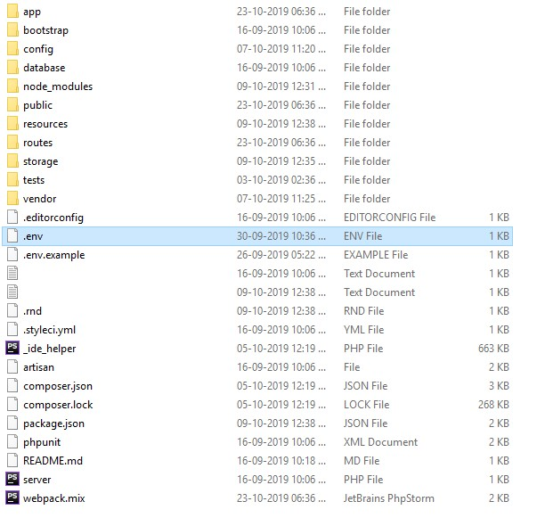

# Guide
The goal of InfyVcards-SaaS is to make the hiring/job-seeking easy for all employers/candidates.
# Technologies Used
This system uses multiple technologies to give the best possible experience.
- PHP with Laravel Framework
- MySQL 5.6+
- jQuery
- Ajax
# Installation Guide
We tried our best to make the installation of the system as easy as possible. System Requirements It is assumed that you have primary knowledge Laravel installation knowledge since this application is built on Laravel.
# System Requirement
It is assumed that you have primary knowledge Laravel and JS application installation knowledge since this application is built on Laravel with JS.
You can read about laravel Requirements here (opens new window)
You need update below variables in php.ini file if you want to send bigger files (Optional).
upload_max_filesize = 50M
max_file_uploads = 50
post_max_size = 100M
# Setup InfyVcards-SaaS System
If you have purchased the InfyVcards-SaaS system then you will be able to find the zip named dist.zip.
If you want to setup InfyVcards-SaaS into your local environment then you can take help
from here.
Now if you want to setup InfyVcards-SaaS on your server then you can directly copy the dist.zip folder to your web root directory on server and the following steps:
# 1. Copy files to web server
Upload dist.zip to your web server's root (public_html) and extract it there.
# 2. Setup Default DB
- Open PHPMyAdmin on your server and do a login.
- Click on the Databases tab.
- Create a new database and specify a Database name of your choice and Click Create button.
- Now on the left, select the database (infy_vcards) OR the one that you have created.
- Click Import in the top menu
- Under Import, choose the default sql file from dist/database/infy_vcards.sql and click button Go.
# 3. Setup environment .env file
- Open .env file from your server's root folder.

- Update your .env file
You need to change the following information into your environment (.env) file.
Make sure your app name wrapped between Quotes ("APP NAME").
- APP_NAME - Name of your Application
- APP_URL - Change this URL with your server URL (including trailing path if you are putting it in sub folder or root website)
- DB_HOST - Put your database hostname here
- DB_PORT - Put your database port here if it does not default to 3306
- DB_DATABASE - Change it to your database name
- DB_USERNAME - Name of your database user
- DB_PASSWORD - Password of your database user
You will also need to set up mail configuration, you can read more about here for that setup based on mail service that you use.
- MAIL_DRIVER
- MAIL_HOST
- MAIL_PORT
- MAIL_USERNAME
- MAIL_PASSWORD
- MAIL_ENCRYPTION
- MAIL_FROM_ADDRESS
- MAIL_FROM_NAME
If you want to store your files to direct your s3 bucket then you have to use following
.env variables.
You need to change FILESYSTEM_DRIVER and MEDIA_DISK value to
s3 when you are using AWS file storage.
- AWS_ACCESS_KEY_ID=
- AWS_SECRET_ACCESS_KEY=
- AWS_DEFAULT_REGION=us-east-1
- AWS_BUCKET=
- AWS_ENDPOINT=
- AWS_URL=
Or you can use your choice of storage driver to store your media assets if you want. All of your attachments will be placed into that.
# 4. Super Admin login
You can do admin login by accessing given URL.
YOUR_APP_URL/login
email: sadmin@vcard.com
password: 123456
# 5. User login
You can do admin login by accessing given URL.
YOUR_APP_URL/login
email: admin@vcard.com
password: 123456
And you are ready to go.
# Setup InfyVcards-SaaS into Local Environment
You can setup InfyVcards-SaaS into your local by using both zip files, but we recommend to use dist file so you have to perform minimal steps.
Here are some steps to setup InfyVcards-SaaS into your local environment :
# 1. Install xampp/wamp (if you don't have it).
# 2. Create folder InfyVcards-SaaS
- if you are using wamp then create InfyVcards-SaaS folder under you_path_to_wamp/www/
- if you are using xamp then create InfyVcards-SaaS folder under you_path_to_xamp/htdocs/
# 3. Unzip dist zip to InfyVcards-SaaS folder
# 4. Point the domain to the uploaded folder
You need to create virtual host first to setup InfyVcards-SaaS. You can find steps here to create virtual host.
- You can find steps here (opens new window) to create virtual host on
XAMPP. - You can find steps here (opens new window) to create virtual host on
WAMP.
Point your domain or subdomain to the InfyVcards-SaaS folder.
Please note that, InfyVcards-SaaS must be installed on a primary domain or subdomain. Installing on a sub-folder will not work, for example:
example.com/InfyVcards-SaaS (Invalid)
localhost/InfyVcards-SaaS (Invalid) if you are putting it in sub folder or root website)
example.com (Valid)
local.InfyVcards-SaaS.com (Valid)
InfyVcards-SaaS.test (Valid)
Open the link to the domain in the browser (Example: https://local.InfyVcards-SaaS.com).
# Key Features and Concepts
Here are some Key Features and Concepts that InfyVcards-SaaS provides.
Its a SaaS VCards Management application, so many users can register into system and use it as per their needs.
# Multi languages Support
We are supporting 9 languages in each panel (Admin | User)
- English
- Spanish
- French
- German
- Russian
- Portuguese
- Arabic
- Chinese
- Turkish
#Landing Page
Beautiful landing page from where users can get related pieces of information about the product. users can see the pricing here.
# About Us
Users can get the product/company information from the about us section which is in the landing page.
# Services
You can add a different kind of services that you are providing in your system, which will attract more users.
# Pricing plans
Users can see the different pricing plans into landing page which is added by the admin from his panel.
You can ask for inquiries and support from the landing page.
#Super Admin Panel
# Dashboard
Powerful super admin dashboard where admin can see overall information of this product.
How many new user is registered, total plans he have, total vcard created, etc.
# Users Management
Here admin can manage the users of the system. he can add / update/delete users.
Admin also able to directly login into the user's account. also he can change user status to in-active if something bad activity is reported.
# VCard Management
Here admin can see all the vcards users has created and also see the preview URL.
Admin can copy the preview URL from the listing and can see the actual preview by hitting that URL.
#Default VCard Templates
Admin can see the default vcard templates here. right now we are providing 10 attractive vcard templates.
#Subscription Plans
Admin can create a different kind of subscription plans from here as per need with templates selection.
You have to add price, currency, which templates you want to select for given plans and the other features that vcard have.
#Front CMS
Here you can manage the all the content of the landing page. you can see the contact us inquiries here.
Can add new testimonials, can update the about us text and many other things.
#Currencies
You can see different kind of currencies here that is pre-populated already.
#Countries / States / Cities
By using this section you can add a different kind of countries/states within the countries and add cities within the states.
#Setting
Basic application settings will be configured from here. e.g Logo. favicon, application name, etc.
#User Panel
# Dashboard
User can see the overall vcards information from here. How many vcard he has and the enquiries count on vcards.
# VCard Management
Here users can create new VCards as per his current plan. User can add his preview URL whatever they want.
You can add the business hours and services, products, testimonials, social profile links and many other things from this section.
You can share and download vcard.
# Business hours
Users can add business hours by days of their business, which will be shown to vcards preview.
#Vcard Social Link
Users can add different social platforms links that will be later used to vcards preview. customers can see that links and use it for more information.
#Custom Fonts
You can add your own fonts whatever you want to add, selected fonts will be highlighted into vcard preview.
#Enquiry
Customers can submit the inquiry from the card preview & Received inquiries on business cards will be shown to related Vcards tables.